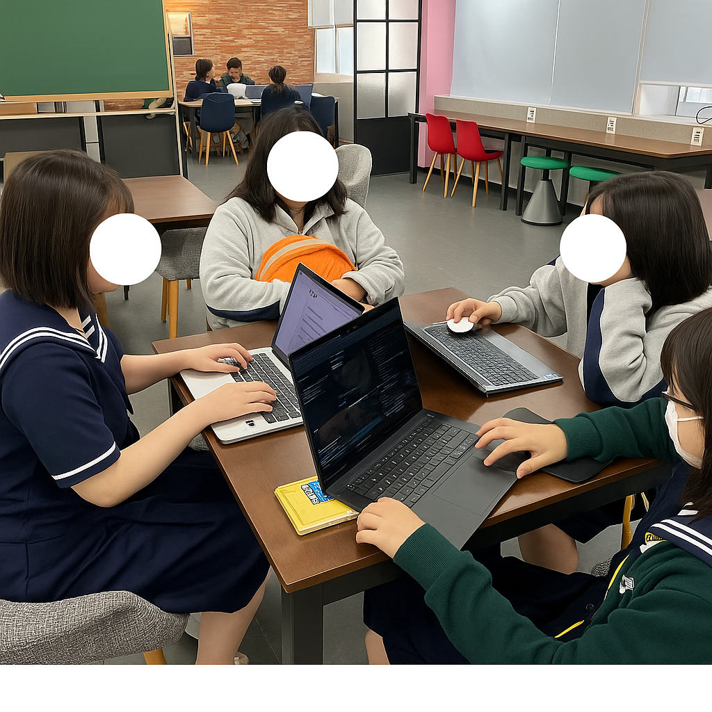
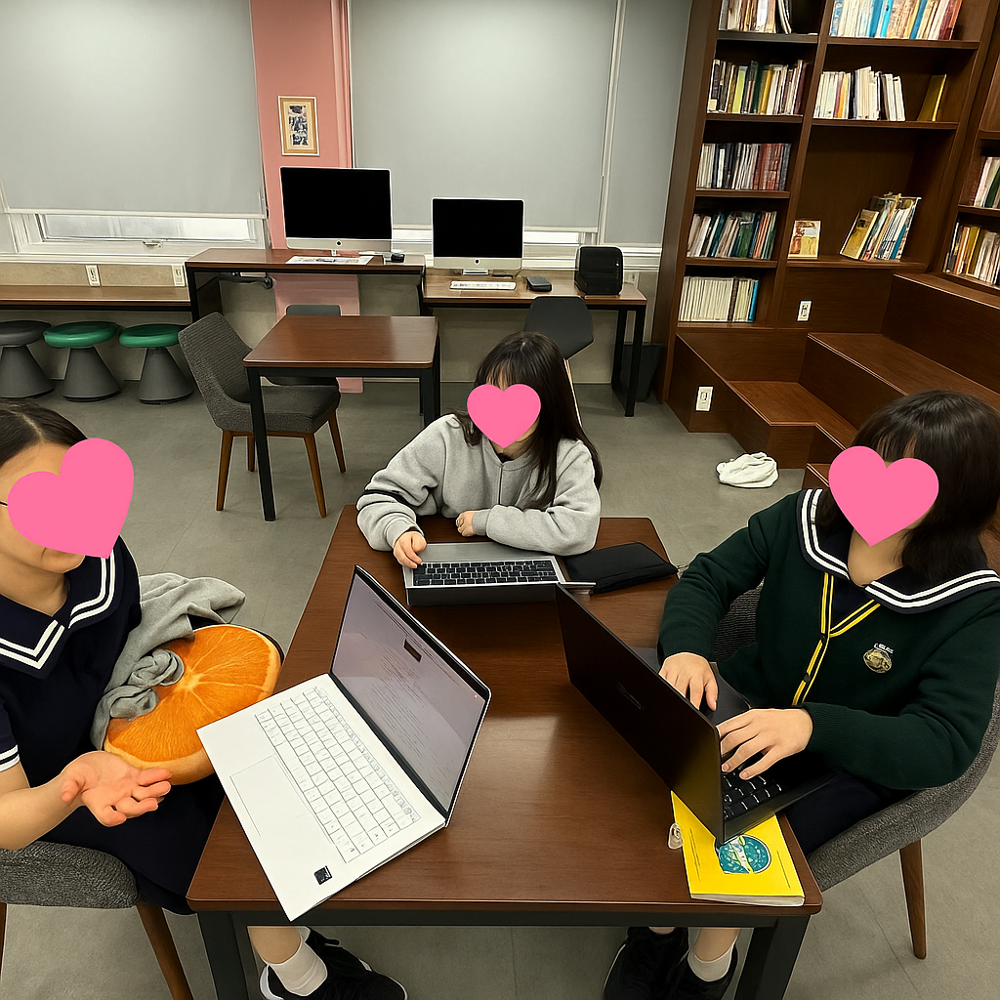

1. 조사 동기와 목적
조사 동기
최근 생성형 AI 콘텐츠의 급속한 확산은 학생들의 일상생활과 학습 방식에 큰 변화를 일으켰다. 유튜브, 틱톡 등 다양한 플랫폼을 통해 생성형 AI가 생성한 콘텐츠를 쉽게 접할 수 있으며, 챗봇을 활용한 학습 및 정보 탐색 또한 점차 보편화되었다. 이러한 변화 속에서, 고등학생들이 생성형 AI 콘텐츠를 어떻게 인식하고 소비하고 있는지, 그리고 이에 대해 어떠한 생각을 가지고 있는지를 구체적으로 파악할 필요성이 제기되었다.
조사 목적
본 조사는 미림마이스터고등학교 뉴미디어소프트웨어과 1학년 2반 학생들이 생성형 AI 콘텐츠에 대해 어떤 인식을 가지고 있으며, 어떠한 종류의 콘텐츠를 주로 소비하는지를 알아보고자 기획되었다. 궁극적으로는 학생들의 경험을 통해 AI가 개인의 창의성과 학습 방식에 미치는 영향을 분석하고, 이를 통해 AI 시대에 요구되는 교육 방향 설정과 윤리적 활용 방안을 모색하는 데 목적이 있다.
2. 조사 계획
조사 개요
- 조사 기간: 5월 14일 ~ 5월 15일
- 조사 대상: 미림마이스터고등학교 뉴미디어소프트웨어과 1학년 2반 학생 17명
- 조사 방법: 설문조사 및 심층 인터뷰 병행
조사 방법 상세
설문조사
대상: 1학년 2반 학생 17명. 생성형 AI 콘텐츠 경험, 소비 유형, 인식 등 객관적 데이터 수집에 중점을 두었다.
심층 인터뷰
대상: 1학년 2반 학생 중 2명 선정. 설문조사로 얻기 어려웠던 구체적인 생각, 경험, 심도 깊은 인식을 파악했다.
3. 조사 결과: 설문조사
생성형 AI 사용 빈도
생성형 AI의 사용 빈도에 대한 응답 평균은 5점 만점에 4.47점으로, 응답자들이 생성형 AI를 매우 자주 사용하고 있음을 나타낸다. 전체 17명 중 12명(70.6%)이 가장 높은 점수인 5점을 선택했다.
학습 및 과제 수행 도움 정도
응답자의 58.8%(10명)가 생성형 AI가 학습이나 과제 수행에 도움이 된다고 응답했다. ‘매우 그렇다’(23.5%, 4명)와 ‘그렇다’(58.8%, 10명)를 합하면 전체의 82.3%(14명)에 달하며, 학생 대다수가 생성형 AI의 학습 및 과제 수행에 대한 효용성을 높게 평가하고 있음을 의미한다.
생성형 AI 콘텐츠 정보 신뢰도
응답자의 절반 이상(58.8%)이 생성형 AI 콘텐츠의 신뢰도에 대해 ‘보통’이라고 응답해, AI가 제공하는 정보에 대해 중립적이거나 신중한 태도를 보이는 경향이 나타났다. ‘신뢰하지 않는다’는 응답도 35.3%로 적지 않았다.
할루시네이션 현상 인지 여부
응답자의 76.5%가 할루시네이션 현상을 ‘알고 있다’거나 ‘매우 잘 알고 있다’고 응답해, 대부분의 학생들이 생성형 AI의 오류 가능성을 인지하고 있음을 보여준다. 그럼에도 불구하고 높은 생성형 AI 활용률을 고려할 때, 학생들은 잠재적 오류를 감수하더라도 AI의 편리함과 효율성 때문에 적극 활용하고 있는 것으로 해석할 수 있다.
3. 조사 결과: 심층 인터뷰
민서연 학생과 김민채 학생은 생성형 AI에 대해 각각의 경험과 시각을 바탕으로 활용성과 한계, 그리고 윤리적 고민을 함께 제시했다. 두 학생 모두 AI의 정보 제공 능력과 학습 도구로서의 효율성을 긍정적으로 평가하면서도, 그 과정에서 드러나는 창의성과 감성, 표현력의 부족에 대해 공통된 문제의식을 갖고 있었다.
인터뷰 인물: 민서연
- AI 콘텐츠의 이질감: 사람의 창작물과 다른 이질감을 느꼈으며, 개별적인 가치관, 개성, 창의성이 충분히 반영되지 않아 표현력이 부족하다고 평가했다.
- AI의 긍정적 측면: 빠른 정보 처리 능력과 학습된 지식을 바탕으로 창의적인 콘텐츠를 신속하게 만들어내는 점은 긍정적으로 바라보았다.
- 우려 사항: 사람들이 AI 결과물을 인간의 결과물보다 우수하게 평가하거나 선호하는 현상이 인간의 창의성과 사고력을 약화시킬 수 있다고 우려했다.
- 구체적 사례: 학교폭력 발표 자료(PPT) 제작 시 AI 활용 경험. 정보량이 지나치게 많고 문장이 길어 가독성이 떨어졌으며, 수정에 많은 시간이 소요되었다고 언급했다.
- 일상생활 활용: 좋아하는 인물이나 말투를 AI에 입력해 대화하는 방식으로 즐거움을 추구하며, AI 기반 밈에 대해서도 긍정적으로 평가했다.
- 윤리적 인식: AI가 기존 그림체나 사람 얼굴에 필터를 씌워 새 창작물을 만드는 행위는 저작권/초상권 침해 가능성을 인식했으며, 허위 정보/가짜 뉴스 유포에 대한 우려도 표했다.

인터뷰 인물: 김민채
- 학습 도구로서의 유용성: AI가 정보를 빠르고 쉽게 제공해 주는 점에서 큰 도움을 받았으며, 학습 효율을 높이는 데 효과적이었다고 평가했다.
- AI의 한계: AI 콘텐츠가 결국 인간의 사고와 경험을 바탕으로 학습된 결과물에 불과하며, 인간의 창의성과 감성을 완전히 대체할 수는 없다고 강조했다.
- AI 의존 우려: 생성형 AI를 반복적으로 사용하는 습관이 인간의 사고력과 창의성을 점차 약화시킬 수 있다고 지적했으며, 이는 사회적 문제로 확대될 수 있다고 경고했다.
- 창작 활동에서의 AI: 그림 공모전이나 창작 활동에서 AI를 활용하는 사례에 대해 부정적인 시각을 가졌으며, 공정성과 창의성 훼손 문제를 야기할 수 있다고 지적했다. 제재 방안과 제도적 장치 마련을 주장했다.
- 윤리적 통제 필요성: 부정적 가치나 편향된 사고를 학습한 AI가 사회에 미칠 영향에 대해 깊은 우려를 나타냈으며, AI 개발 및 활용에 반드시 윤리적 통제와 기준이 필요하다고 강조했다.

단어 클라우드 분석 결과
위 이미지는 데이터 분석을 통해 생성된 주요 키워드의 단어 클라우드입니다.
4. 추가 참고자료
-
Evaluating Students' Understanding and Perception of Generative AI for Education
저자: Aditya Johri 외 | 발행처 및 발행년도: arXiv, 2024
주요 내용: 정보기술 계열 대학생의 생성형 AI 활용 경험, 인식, 오해, 교육적 시사점
-
인공지능(AI)에 대한 고등학생 인식 조사
저자: 김정현, 이재호 | 발행처 및 발행년도: 한국학술지인용색인(KCI), 2024
주요 내용: 고등학생의 인공지능 활용 경험, 인식, 흥미, 교육적 요구 분석
5. 결론 및 제언
조사 결과 종합 및 주요 발견점
- 높은 활용률과 긍정적 인식: 대부분의 학생들이 생성형 AI를 일상 속에서 자주 활용하며, 학습과 과제 수행에서 특히 큰 도움을 받고 있다고 응답했다.
- 정보 신뢰성에 대한 비판적 태도와 할루시네이션 인지: 학생들은 생성형 AI가 제공하는 정보의 신뢰도에 대해 신중한 태도를 보였으며, 대다수가 할루시네이션 현상의 존재를 인지하고 있었다.
- AI의 한계와 윤리적 문제에 대한 높은 인식: 인터뷰 결과, 학생들은 AI가 인간의 창의성과 감성을 완전히 대체할 수 없으며, AI 남용 시 발생할 수 있는 창의성 저하, 공정성 문제, 저작권 및 초상권 침해 등 다양한 윤리적 쟁점에 대해 깊이 인식하고 있었다.
새롭게 알게 된 점 및 느낀 점
이번 조사를 통해 생성형 AI가 학생들의 일상에 깊숙이 자리 잡았다는 점을 새롭게 확인했다. 학생들은 AI의 장점뿐만 아니라, 그 한계와 문제점까지 잘 인식하고 있었다. 특히, AI가 제공하는 정보의 신뢰성에 대해 비판적으로 접근하고, 할루시네이션 현상에 대해서도 많은 학생들이 인지하고 있다는 점에서, 우리 반 학생들이 AI를 맹목적으로 수용하지 않고 현명하게 활용하는 태도를 지녔음을 확인했다.
제언과 우리의 다짐
앞으로 우리는 생성형 AI를 유용한 도구로 적극 활용하면서도, 다음과 같은 구체적인 노력을 기울일 것이다.
- AI에 의존하기보다 우리의 비판적 사고력과 창의적 사고력을 더욱 키워갈 것이다. 스스로 생각하고, 새로운 가치를 만들어내는 힘을 기르겠다.
- AI가 제공하는 정보는 반드시 다른 출처와 교차 확인하여 정확성을 확보하고, 저작권, 초상권, 개인 정보 보호 등 윤리적 문제에 대한 인식을 높여 AI를 책임감 있게 활용할 것이다.
- AI 기술의 빠른 변화에 맞춰 관련 지식을 지속적으로 학습하고, AI를 교육 및 생활에 효과적으로 통합하는 방안을 탐구하며 AI의 잠재적 위험성을 경계하고 인간 중심의 AI 활용 방안을 모색할 것이다.
우리 반은 이처럼 AI의 장점을 현명하게 활용하고, 동시에 인간 고유의 가치를 지키며 AI와 조화롭게 공존하는 현명한 사용자로 성장할 것을 다짐한다.